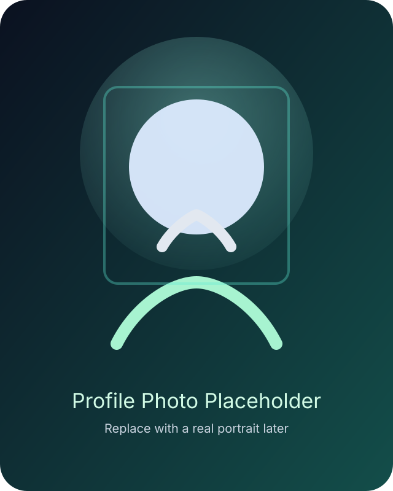

I am a Certified Pharmacy Technician with practical retail pharmacy experience, a strong focus on safe and organized pharmacy practice, and a reliable work ethic built around accuracy, confidentiality, teamwork, and continuous learning.
Pharmacy • Healthcare • Professional Growth
Certified Pharmacy Technician
Accurate prescription workflow, organized inventory management, patient-focused support, and a clean professional approach built for modern healthcare environments.
Rx Portfolio
Available for opportunities

Inventory
Accuracy
Patient Safety
2 Years
Retail Pharmacy
50–70
Prescriptions / day
2 Roles
Work Experience
About Me
Practical pharmacy experience with a disciplined, patient-focused approach.
I work with attention to detail in high-volume environments, support prescription workflow under pharmacist supervision, and stay committed to efficient service, professional discipline, and patient safety.
Professional Summary
Clear, recruiter-friendly summary
Certified Pharmacy Technician with 2 years of retail pharmacy experience. Experienced in handling 50–70 prescriptions daily, prescription workflow, medication-related documentation, inventory management, expiry monitoring, insurance and third-party billing support, pharmacy software, and patient-facing service. Experienced in high-volume pharmacy environments and committed to patient safety, organized workflow, confidentiality, accuracy, and professional teamwork under pharmacist supervision.
Core Skills
Organized into pharmacy-focused groups
Pharmacy Operations
- Prescription filling and dispensing workflow
- Prescription reading
- Medication handling
- Inventory management
- Stock rotation
- Expiry monitoring
- Controlled medication record keeping
- Pharmacy software
- Data entry
- Label printing
Patient Care & Safety
- Patient confidentiality
- Ethical information handling
- OTC guidance within scope
- Prescription refill coordination
- Clear patient communication
- Caregiver communication
- Patient safety awareness
Workplace Skills
- Attention to detail
- High-volume workflow
- Workflow prioritization
- Team collaboration
- Communication
- Time management
- Cash handling
- Basic billing
- Fast learning
- Professional discipline
Work Experience
High-volume retail pharmacy background
New Publix Pharmacy
College Chowk, Sahiwal • Pharmacy Technician • 14 months- Accurately filled 50–70 prescriptions daily while verifying correct dosage, medication, and patient information under pharmacist supervision.
- Processed insurance claims and third-party billing, resolving rejections and reducing patient wait times for approvals.
- Managed daily inventory control including receiving orders, checking expiry dates, and restocking fast-moving medications to prevent shortages.
- Supported organized high-volume pharmacy workflow and assisted patients within legal and professional scope.
Makkah Medicos
Harappa Station • Pharmacy Technician • 11 months- Assisted 200+ customers weekly with prescription pickups, refill requests, and over-the-counter medication guidance within legal scope.
- Maintained controlled substance logs and ensured compliance with pharmacy laws and documentation requirements.
- Operated pharmacy software for data entry, label printing, and prescription tracking, reducing entry errors by organizing high-volume workflow.
- Supported customer service and pharmacy documentation.
Hospital Pharmacy Training
Practical exposure separated from employment
Haji Abdul Qayyum — District Headquarters Hospital
Hospital Pharmacy Training / Practical Pharmacy Experience • Dec 2022 – Mar 2023 (Approx.)
Pharmacy shelf and stock management
Medication storage organization
Expiry date monitoring
Stock rotation
Prescription reading
Pharmacy software
Workflow organization
Basic hospital pharmacy operations
Education
Academic and professional preparation
Faculty of Science (Pre-Medical)
Government Boys Postgraduate College, Sahiwal
2023–2025Category-B Pharmacy Technician Certificate / Diploma
Ehsan College of Health Sciences, Sahiwal
2022–2025
Registration
Professional registration card
Registered Pharmacy Technician
Punjab Pharmacy Council
Lifetime
Registration
Certifications
Professional and technical learning
Category-B Pharmacy Technician Certificate
Ehsan College of Health Sciences, Sahiwal
Pharmacy Technician Intermediate
Coursera • Completed 2024
Inventory Management • Expiry Management • Customer Care • Prescription Handling • Pharmacy WorkflowMicrosoft Word
Included as a technical/professional skill
Professional Projects
Exactly the four project cards from your brief
Prescription & Controlled-Medication Documentation Improvement
Team-based workflow improvement at New Publix Pharmacy focused on organized prescription documentation and safer record continuity.
Hospital Pharmacy Practical Training
Hands-on exposure to shelf management, stock rotation, prescription reading, medication storage, and workflow support.
Pharmacy Inventory & Expiry Management Experience
Practical experience in managing stock, monitoring expiry dates, and supporting orderly pharmacy operations.
Flood Relief Volunteer Healthcare Support
Community support in a healthcare-related environment near Dhadhrabhala area by Ravi River, Harappa.
Professional & Academic Highlights
Presented as strengths, not fake awards
Good conduct and discipline
Strong academic performance
Fast learner
Quick understanding of new tasks
Reliable and punctual
High attention to detail
High-volume pharmacy workflow
Practical pharmacy training experience
Workflow improvement project
Inventory and prescription handling
Character Certificate from Ehsan College of Health Sciences
Volunteer Experience
Community healthcare support
Volunteer Healthcare Support
Dhadhrabhala area near Ravi River, Harappa • September 2025
Participated in a flood relief camp providing community support in a healthcare-related environment. This was an informal, non-official camp and is presented here as volunteer experience only.
Languages
Communication profile
Career Objective
Long-term professional development
I aim to build a long-term professional career in pharmacy and healthcare by applying my practical retail pharmacy experience, strengthening my technical skills, contributing to safe and efficient medication management, and continuing to develop within modern healthcare environments.
Downloads
Ready for recruiter use
Download Resume
Available
Download Certificates
Add files later
Download Cover Letter
Add files later
References
Professional references
Professional testimonials and references are available upon request.
Professional references available upon request.
Contact